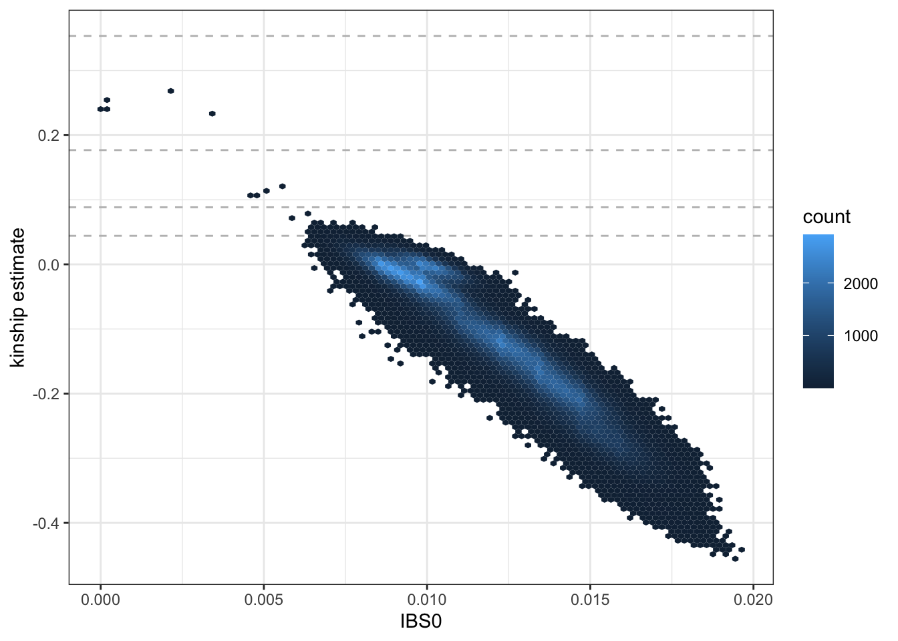
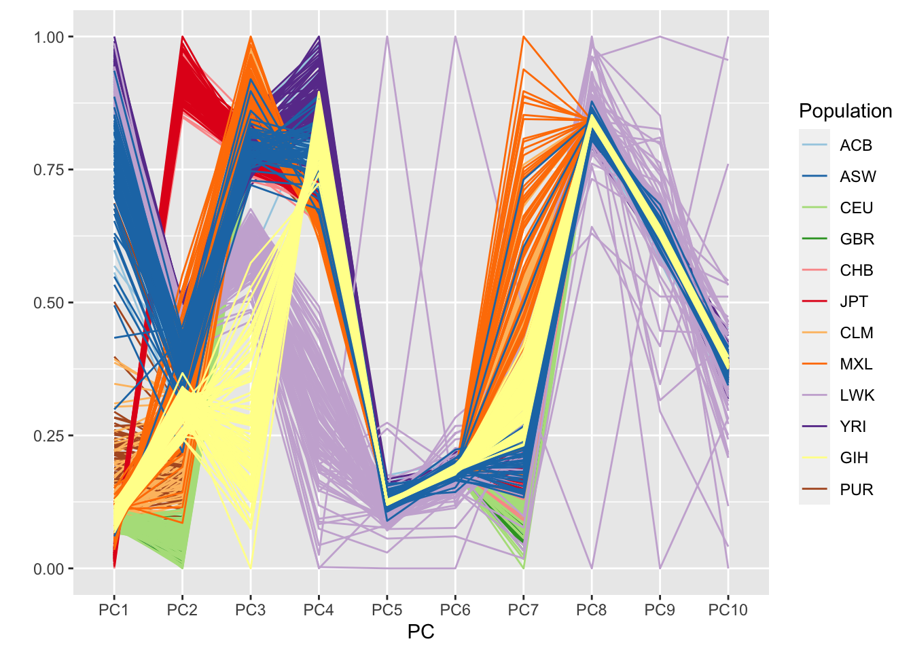
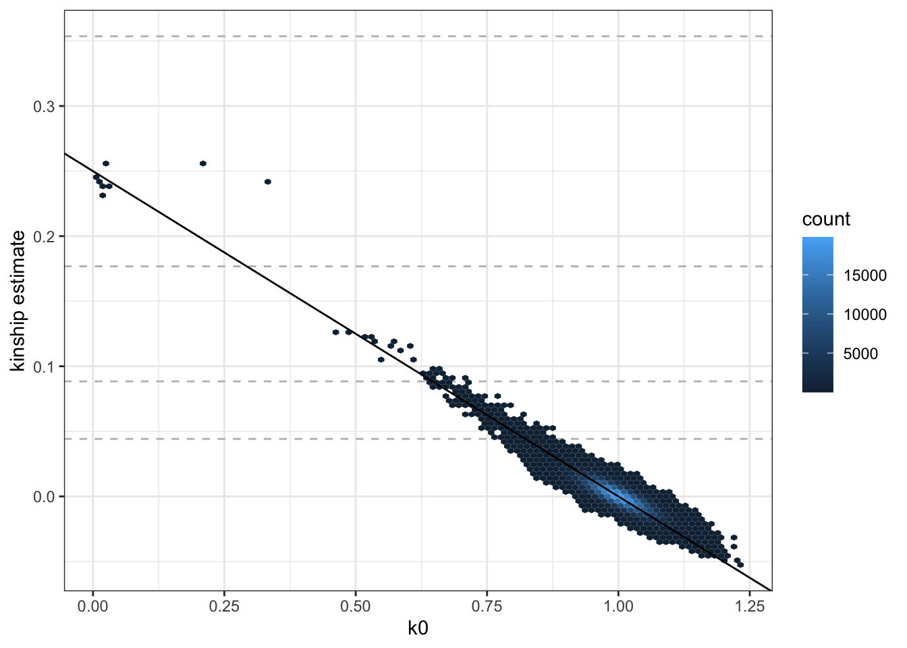
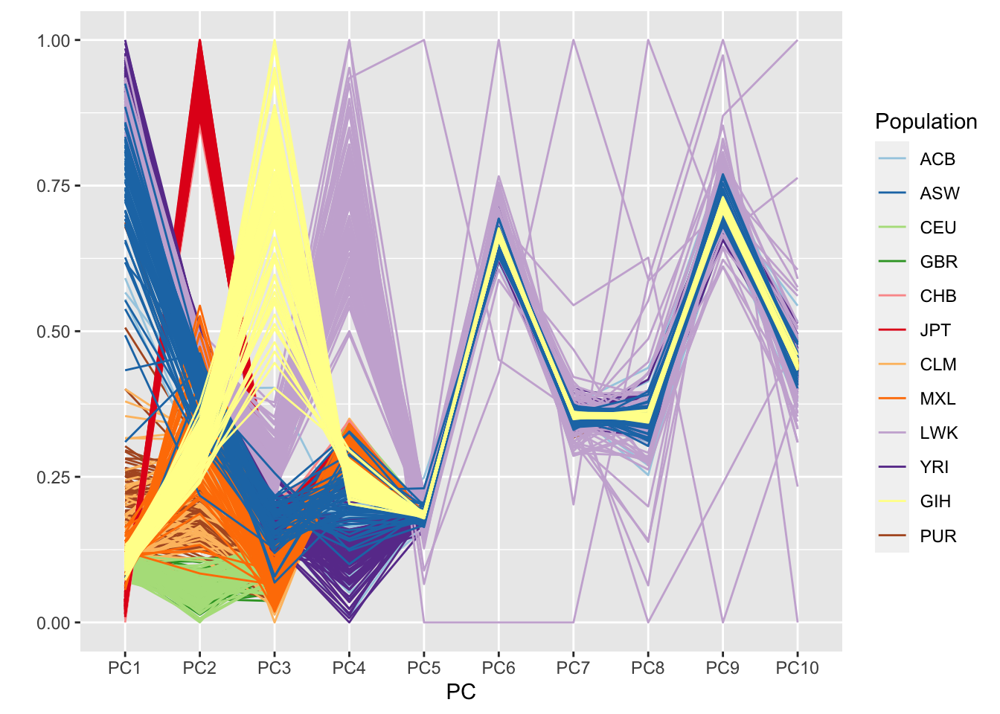
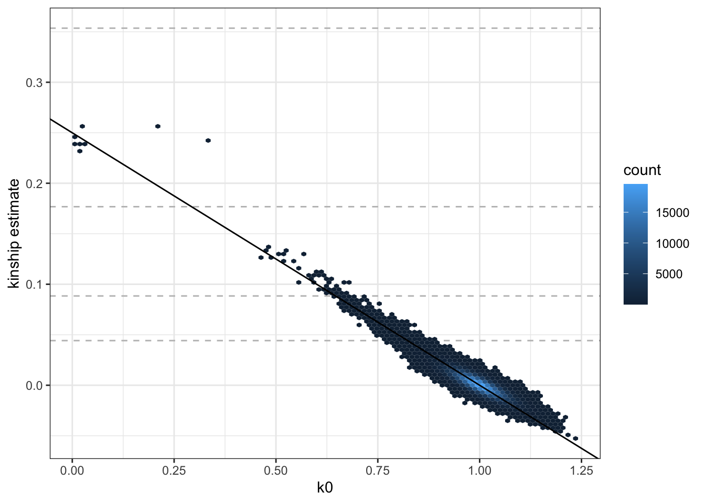

6 Ancestry and Relatedness Inference
6.1 LD-pruning
We generally advise that population structure and relatedness inference be performed using a set of (nearly) independent genetic variants. To find this set of variants, we perform linkage-disequilibrium (LD) pruning on the study sample set. We typically use an LD threshold of r^2 < 0.1 to select variants.
library(SeqArray)
repo_path <- "https://github.com/UW-GAC/SISG_2021/raw/master"
# use a GDS file with all chromosomes
if (!dir.exists("data")) dir.create("data")
gdsfile <- "data/1KG_phase3_subset.gds"
if (!file.exists(gdsfile)) download.file(file.path(repo_path, gdsfile), gdsfile)
gdsfmt::showfile.gds(closeall=TRUE) # make sure file is not already open
gds <- seqOpen(gdsfile)
# run LD pruning
library(SNPRelate)
set.seed(100) # LD pruning has a random element; so make this reproducible
snpset <- snpgdsLDpruning(gds,
method="corr",
slide.max.bp=10e6,
ld.threshold=sqrt(0.1))## SNV pruning based on LD:
## Excluding 1,120 SNVs on non-autosomes
## Calculating allele counts/frequencies ...
##
[..................................................] 0%, ETC: ---
[==================================================] 100%, completed, 0s
## # of selected variants: 24,387
## Excluding 253 SNVs (monomorphic: TRUE, MAF: NaN, missing rate: NaN)
## # of samples: 1,126
## # of SNVs: 24,387
## using 1 thread
## sliding window: 10,000,000 basepairs, Inf SNPs
## |LD| threshold: 0.316228
## method: correlation
## Chromosome 1: 92.23%, 1,033/1,120
## Chromosome 2: 91.16%, 1,021/1,120
## Chromosome 3: 91.16%, 1,021/1,120
## Chromosome 4: 91.16%, 1,021/1,120
## Chromosome 5: 91.88%, 1,029/1,120
## Chromosome 6: 89.02%, 997/1,120
## Chromosome 7: 90.54%, 1,014/1,120
## Chromosome 8: 89.02%, 997/1,120
## Chromosome 9: 88.66%, 993/1,120
## Chromosome 10: 86.88%, 973/1,120
## Chromosome 11: 86.79%, 972/1,120
## Chromosome 12: 88.30%, 989/1,120
## Chromosome 13: 86.34%, 967/1,120
## Chromosome 14: 84.46%, 946/1,120
## Chromosome 15: 84.11%, 942/1,120
## Chromosome 16: 83.93%, 940/1,120
## Chromosome 17: 84.91%, 951/1,120
## Chromosome 18: 84.46%, 946/1,120
## Chromosome 19: 81.96%, 918/1,120
## Chromosome 20: 82.05%, 919/1,120
## Chromosome 21: 75.09%, 841/1,120
## Chromosome 22: 76.52%, 857/1,120
## 21,287 markers are selected in total.## chr1 chr2 chr3 chr4 chr5 chr6 chr7 chr8 chr9 chr10 chr11 chr12 chr13 chr14 chr15 chr16 chr17 chr18 chr19 chr20 chr21 chr22
## 1033 1021 1021 1021 1029 997 1014 997 993 973 972 989 967 946 942 940 951 946 918 919 841 857## [1] 212876.2 Computing a GRM
We can use the SNPRelate package to compute a Genetic Relationship matrix (GRM). A GRM captures genetic relatedness due to both distant ancestry (i.e. population structure) and recent kinship (i.e. family structure) in a single matrix.
SNPRelate offers several algorithms for computing a GRM, including the commonly-used GCTA Yang et al 2011. The most recent algorithm added to the package is “IndivBeta” Weir and Goudet 2017.
## Genetic Relationship Matrix (GRM, GCTA):
## Calculating allele counts/frequencies ...
##
[..................................................] 0%, ETC: ---
[==================================================] 100%, completed, 0s
## # of selected variants: 21,287
## # of samples: 1,126
## # of SNVs: 21,287
## using 1 thread
## CPU capabilities: Double-Precision SSE2
## Tue Jul 20 17:41:38 2021 (internal increment: 896)
##
[..................................................] 0%, ETC: ---
[==================================================] 100%, completed, 4s
## Tue Jul 20 17:41:42 2021 Done.## [1] "sample.id" "snp.id" "method" "grm"## [1] 1126 1126## [,1] [,2] [,3] [,4] [,5]
## [1,] 0.72284858 0.03428003 0.02475889 0.04051960 0.02397084
## [2,] 0.03428003 0.74335217 0.02098193 0.02772272 0.02125452
## [3,] 0.02475889 0.02098193 0.48389966 0.03247437 0.03382292
## [4,] 0.04051960 0.02772272 0.03247437 0.80364821 0.02771950
## [5,] 0.02397084 0.02125452 0.03382292 0.02771950 0.474657976.3 De-convoluting ancestry and relatedness
To disentangle distant ancestry (i.e. population structure) from recent kinship (i.e. familial relatedness), we implement the analysis described in Conomos et al., 2016. This approach uses the KING, PC-AiR, and PC-Relate methods.
6.3.1 KING
Step 1 is to get initial kinship estimates using KING-robust, which is robust to discrete population structure but not ancestry admixture. KING-robust will be able to identify close relatives (e.g. 1st and 2nd degree) reliably, but may identify spurious pairs or miss more distant pairs of relatives in the presence of admixture. KING is available as its own software, but the KING-robust algorithm is also available in SNPRelate.
## IBD analysis (KING method of moment) on genotypes:
## Calculating allele counts/frequencies ...
##
[..................................................] 0%, ETC: ---
[==================================================] 100%, completed, 1s
## # of selected variants: 21,287
## # of samples: 1,126
## # of SNVs: 21,287
## using 1 thread
## No family is specified, and all individuals are treated as singletons.
## Relationship inference in the presence of population stratification.
## CPU capabilities: Double-Precision SSE2
## Tue Jul 20 17:41:43 2021 (internal increment: 28672)
##
[..................................................] 0%, ETC: ---
[==================================================] 100%, completed, 1s
## Tue Jul 20 17:41:44 2021 Done.## [1] "sample.id" "snp.id" "afreq" "IBS0" "kinship"## [1] 1126 1126kingMat <- king$kinship
colnames(kingMat) <- rownames(kingMat) <- king$sample.id
# look at the top corner of the matrix
kingMat[1:5,1:5]## HG00096 HG00097 HG00099 HG00100 HG00101
## HG00096 0.500000000 0.013295347 0.021206409 0.003261883 0.021668220
## HG00097 0.013295347 0.500000000 0.007122507 -0.009021842 0.003561254
## HG00099 0.021206409 0.007122507 0.500000000 0.037700283 0.020028275
## HG00100 0.003261883 -0.009021842 0.037700283 0.500000000 0.016992551
## HG00101 0.021668220 0.003561254 0.020028275 0.016992551 0.500000000We extract pairwise kinship estimates and IBS0 values (the proportion of variants for which the pair of indivdiuals share 0 alleles identical by state) to plot. We use a hexbin plot to visualize the relatedness for all pairs of samples.
## ID1 ID2 IBS0 kinship
## 1 HG00096 HG00097 0.007986095 0.013295347
## 2 HG00096 HG00099 0.007845164 0.021206409
## 3 HG00096 HG00100 0.008831681 0.003261883
## 4 HG00096 HG00101 0.007939118 0.021668220
## 5 HG00096 HG00102 0.008737727 -0.003362152
## 6 HG00096 HG00103 0.007939118 0.026241799library(ggplot2)
ggplot(kinship, aes(IBS0, kinship)) +
geom_hline(yintercept=2^(-seq(3,9,2)/2), linetype="dashed", color="grey") +
geom_hex(bins = 100) +
ylab("kinship estimate") +
theme_bw()
We see a few parent-offspring, full sibling, 2nd degree, and 3rd degree relative pairs. The abundance of negative estimates represent pairs of individuals who have ancestry from different populations – the magnitude of the negative relationship is informative of how different their ancestries are; more on this below.
6.3.2 PC-AiR
The next step is PC-AiR, which provides robust population structure inference in samples with kinship and pedigree structure. PC-AiR is available in the GENESIS package via the function pcair.
First, PC-AiR partitions the full sample set into a set of mutually unrelated samples that is maximally informative about all ancestries in the sample (i.e. the unrelated set) and their relatives (i.e. the related set). We use a 3rd degree kinship threshold (kin.thresh = 2^(-9/2)), which corresponds to first cousins – this defines anyone less related than first cousins as “unrelated”. We use the negative KING-robust estimates as “ancestry divergence” measures (divMat) to identify pairs of samples with different ancestry – we preferentially select individuals with many negative estimates for the unrelated set to ensure ancestry representation. For now, we also use the KING-robust estimates as our kinship measures (kinMat); more on this below.
Once the unrelated and related sets are identified, PC-AiR performs a standard Principal Component Analysis (PCA) on the unrelated set of individuals and then projects the relatives onto the PCs. Under the hood, PC-AiR uses the SNPRelate package for efficient PC computation and projection.
# run PC-AiR
library(GENESIS)
pca <- pcair(gds,
kinobj = kingMat,
kin.thresh=2^(-9/2),
divobj = kingMat,
div.thresh=-2^(-9/2))## Principal Component Analysis (PCA) on genotypes:
## Excluding 1,120 SNVs on non-autosomes
## Calculating allele counts/frequencies ...
##
[..................................................] 0%, ETC: ---
[==================================================] 100%, completed, 0s
## # of selected variants: 23,779
## Excluding 861 SNVs (monomorphic: TRUE, MAF: NaN, missing rate: NaN)
## # of samples: 1,040
## # of SNVs: 23,779
## using 1 thread
## # of principal components: 32
## CPU capabilities: Double-Precision SSE2
## Tue Jul 20 17:41:45 2021 (internal increment: 972)
##
[..................................................] 0%, ETC: ---
[==================================================] 100%, completed, 4s
## Tue Jul 20 17:41:49 2021 Begin (eigenvalues and eigenvectors)
## Tue Jul 20 17:41:49 2021 Done.
## SNP Loading:
## # of samples: 1,040
## # of SNPs: 23,779
## using 1 thread
## using the top 32 eigenvectors
## Tue Jul 20 17:41:49 2021 (internal increment: 7780)
##
[..................................................] 0%, ETC: ---
[==================================================] 100%, completed, 1s
## Tue Jul 20 17:41:50 2021 Done.
## Sample Loading:
## # of samples: 86
## # of SNPs: 23,779
## using 1 thread
## using the top 32 eigenvectors
## Tue Jul 20 17:41:50 2021 (internal increment: 65536)
##
[..................................................] 0%, ETC: ---
[==================================================] 100%, completed, 0s
## Tue Jul 20 17:41:50 2021 Done.## [1] "vectors" "values" "rels" "unrels" "kin.thresh" "div.thresh" "sample.id" "nsamp" "nsnps" "varprop" "call" "method"## [1] 1040## [1] "HG00096" "HG00097" "HG00099" "HG00100" "HG00101" "HG00102"## [1] 86## [1] "NA18553" "NA19010" "HG00240" "HG01958" "NA18974" "NA19720"# extract the top 10 PCs and make a data.frame
pcs <- data.frame(pca$vectors[,1:10])
colnames(pcs) <- paste0('PC', 1:10)
pcs$sample.id <- pca$sample.id
dim(pcs)## [1] 1126 11## PC1 PC2 PC3 PC4 PC5 PC6 PC7 PC8 PC9 PC10 sample.id
## HG00096 -0.02226416 -0.03706223 0.007784659 -0.006036777 -0.0002494770 0.0008316496 -0.03953455 6.079733e-05 0.0009154511 8.333681e-04 HG00096
## HG00097 -0.02069118 -0.03316550 0.010648323 -0.006725514 0.0004179001 -0.0005008697 -0.03380661 -1.743989e-03 -0.0012662487 -2.869483e-03 HG00097
## HG00099 -0.02102452 -0.03547247 0.009881201 -0.005776697 0.0005220132 0.0011478104 -0.03409698 6.145952e-07 0.0010956673 -2.258131e-04 HG00099
## HG00100 -0.02120448 -0.04293781 0.014368290 -0.006435646 0.0004269673 0.0025670278 -0.04708289 1.140219e-03 -0.0007786959 -8.237878e-04 HG00100
## HG00101 -0.02108916 -0.03594252 0.010240805 -0.003099693 0.0012105916 0.0028715482 -0.03505874 4.599234e-04 0.0068621094 -1.783242e-03 HG00101
## HG00102 -0.02209371 -0.04086700 0.013113725 -0.001004959 -0.0014970887 -0.0008704542 -0.03083835 -1.097275e-03 0.0030383585 6.466877e-05 HG00102We’d like to determine which PCs are ancestry informative. To do this we look at the PCs in conjunction with population information for the 1000 Genomes samples. This information is stored in an AnnotatedDataFrame. We make a parallel coordinates plot, color-coding by 1000 Genomes population.
library(Biobase)
sampfile <- "data/sample_annotation.RData"
if (!file.exists(sampfile)) download.file(file.path(repo_path, sampfile), sampfile)
annot <- get(load(sampfile))
library(dplyr)
annot <- pData(annot) %>%
dplyr::select(sample.id, Population)
pc.df <- left_join(pcs, annot, by="sample.id")
library(GGally)
library(RColorBrewer)
pop.cols <- setNames(brewer.pal(12, "Paired"),
c("ACB", "ASW", "CEU", "GBR", "CHB", "JPT", "CLM", "MXL", "LWK", "YRI", "GIH", "PUR"))
ggparcoord(pc.df, columns=1:10, groupColumn="Population", scale="uniminmax") +
scale_color_manual(values=pop.cols) +
xlab("PC") + ylab("")
6.3.3 PC-Relate
The next step is PC-Relate, which provides accurate kinship inference, even in the presence of population structure and ancestry admixture, by conditioning on ancestry informative PCs. As we saw above, the first 4 PCs separate populations in our study, so we condition on PCs 1-4 in our PC-Relate analysis. PC-Relate can be performed using the pcrelate function in GENESIS, which expects a SeqVarIterator object for the genotype data. The training.set argument allows for specification of which samples to use to “learn” the ancestry adjustment – we recommend the unrelated set from the PC-AiR analysis.
(NOTE: this will take a few minutes to run).
seqResetFilter(gds, verbose=FALSE)
library(SeqVarTools)
seqData <- SeqVarData(gds)
# filter the GDS object to our LD-pruned variants
seqSetFilter(seqData, variant.id=pruned)## # of selected variants: 21,287iterator <- SeqVarBlockIterator(seqData, verbose=FALSE)
pcrel <- pcrelate(iterator,
pcs=pca$vectors[,1:4],
training.set=pca$unrels)
names(pcrel)## [1] "kinBtwn" "kinSelf"## [1] 633375 6## ID1 ID2 kin k0 k2 nsnp
## 1 HG00096 HG00097 0.0195745605 0.8884407 -0.03326108 4238
## 2 HG00096 HG00099 0.0066373621 0.9415895 -0.03186106 4253
## 3 HG00096 HG00100 0.0008478914 0.9733286 -0.02327980 4200
## 4 HG00096 HG00101 0.0094582260 0.9347343 -0.02743277 4259
## 5 HG00096 HG00102 0.0143016544 0.9578218 0.01502844 4219
## 6 HG00096 HG00103 0.0168467786 0.9103588 -0.02225413 4252## [1] 1126 3## ID f nsnp
## 1 HG00096 -0.010207002 4278
## 2 HG00097 0.003093096 4326
## 3 HG00099 -0.060436310 4303
## 4 HG00100 0.012633672 4270
## 5 HG00101 -0.033837780 4302
## 6 HG00102 0.030378865 4264We plot the pairwise kinship estimates againts the IBD0 (k0) estimates (the proportion of variants for which the pair of individuals share 0 alleles identical by descent). We use a hexbin plot to visualize the relatedness for all pairs of samples.
ggplot(pcrel$kinBtwn, aes(k0, kin)) +
geom_hline(yintercept=2^(-seq(3,9,2)/2), linetype="dashed", color="grey") +
geom_hex(bins = 100) +
geom_abline(intercept = 0.25, slope = -0.25) +
ylab("kinship estimate") +
theme_bw()
We see that the PC-Relate relatedness estimates for unrelated pairs (i.e. kin ~ 0 and k0 ~ 1) are much closer to expectation than those from KING-robust.
We can use the pcrelateToMatrix function to transform the output into an (n x n) kinship matrix (KM).
## [1] 1126 1126## 5 x 5 Matrix of class "dsyMatrix"
## HG00096 HG00097 HG00099 HG00100 HG00101
## HG00096 0.4948964992 0.0195745605 0.0066373621 0.0008478914 0.0094582260
## HG00097 0.0195745605 0.5015465480 0.0008448096 0.0022230394 0.0048742994
## HG00099 0.0066373621 0.0008448096 0.4697818452 0.0290478189 -0.0002944969
## HG00100 0.0008478914 0.0022230394 0.0290478189 0.5063168358 0.0100841545
## HG00101 0.0094582260 0.0048742994 -0.0002944969 0.0100841545 0.48308110986.4 Exercises
In small samples (such as this one), we recommend performing a second iteration of PC-AiR and PC-Relate. Now that we have the PC-Relate ancestry-adjusted kinship estimates, we can better partition our sample into unrelated and related sets. This can lead to better ancestry PCs from PC-AiR and better relatedness estimates from PC-Relate.
Perform a second PC-AiR analysis, this time using the PC-Relate kinship matrix as the kinship estimates (you should still use the KING-robust matrix for the ancestry divergence estimates). How does the unrelated set compare to the first PC-AiR analysis?
Make a parallel coordinates plot of the top 10 PC-AiR PCs. How does this compare to the plot from the first iteration? How many PCs seem to reflect ancestry?
Perform a second PC-Relate analysis, this time using the new PC-AiR PCs to adjust for ancestry. Make a hexbin plot of estimated kinship vs IBD0.
6.5 Solutions
- Perform a second PC-AiR analysis, this time using the PC-Relate kinship matrix as the kinship estimates (you should still use the KING-robust matrix for the ancestry divergence estimates). How does the unrelated set compare to the first PC-AiR analysis?
We run the second PC-AiR analysis the same as the first, except using the PC-Relate kinship matrix we created above (pcrelMat) as the input to parameter kinobj – this means that we are using the PC-Relate estimates instead of the KING estimates to identify related pairs of samples. In the solution shown here, we also demonstrate that a SeqVarData object can be used as input, but we need to specify the variants to use in the analysis using the snp.include parameter.
## # of selected samples: 1,126
## # of selected variants: 25,760# run PC-AiR
pca2 <- pcair(seqData,
kinobj=pcrelMat,
kin.thresh=2^(-9/2),
divobj=kingMat,
div.thresh=-2^(-9/2),
snp.include = pruned)## Principal Component Analysis (PCA) on genotypes:
## Calculating allele counts/frequencies ...
##
[..................................................] 0%, ETC: ---
[==================================================] 100%, completed, 0s
## # of selected variants: 20,945
## Excluding 342 SNVs (monomorphic: TRUE, MAF: NaN, missing rate: NaN)
## # of samples: 1,070
## # of SNVs: 20,945
## using 1 thread
## # of principal components: 32
## CPU capabilities: Double-Precision SSE2
## Tue Jul 20 17:45:10 2021 (internal increment: 944)
##
[..................................................] 0%, ETC: ---
[==================================================] 100%, completed, 4s
## Tue Jul 20 17:45:14 2021 Begin (eigenvalues and eigenvectors)
## Tue Jul 20 17:45:15 2021 Done.
## SNP Loading:
## # of samples: 1,070
## # of SNPs: 20,945
## using 1 thread
## using the top 32 eigenvectors
## Tue Jul 20 17:45:15 2021 (internal increment: 7564)
##
[..................................................] 0%, ETC: ---
[==================================================] 100%, completed, 0s
## Tue Jul 20 17:45:15 2021 Done.
## Sample Loading:
## # of samples: 56
## # of SNPs: 20,945
## using 1 thread
## using the top 32 eigenvectors
## Tue Jul 20 17:45:15 2021 (internal increment: 65536)
##
[..................................................] 0%, ETC: ---
[==================================================] 100%, completed, 0s
## Tue Jul 20 17:45:15 2021 Done.## [1] "vectors" "values" "rels" "unrels" "kin.thresh" "div.thresh" "sample.id" "nsamp" "nsnps" "varprop" "call" "method"## [1] 1070## [1] 56# extract the top 10 PCs and make a data.frame
pcs2 <- data.frame(pca2$vectors[,1:10])
colnames(pcs2) <- paste0('PC', 1:10)
pcs2$sample.id <- pca2$sample.id
dim(pcs2)## [1] 1126 11We see that there are now 1,070 samples in the unrelated set, as opposed to 1,040 in the first PC-AiR analysis. This indicates that KING-robust likely overestimated relatedness for some pairs due to bias from ancestry admixture.
- Make a parallel coordinates plot of the top 10 PC-AiR PCs. How does this compare to the plot from the first iteration? How many PCs seem to reflect ancestry?
We can reuse the code from above to make the parallel coordinates plot.
library(Biobase)
sampfile <- "data/sample_annotation.RData"
if (!file.exists(sampfile)) download.file(file.path(repo_path, sampfile), sampfile)
annot <- get(load(sampfile))
pc.df <- as.data.frame(pcs2)
names(pc.df) <- 1:ncol(pcs2)
pc.df$sample.id <- row.names(pcs2)
library(dplyr)
annot <- pData(annot) %>%
dplyr::select(sample.id, Population)
pc.df <- left_join(pcs2, annot, by="sample.id")
library(GGally)
library(RColorBrewer)
pop.cols <- setNames(brewer.pal(12, "Paired"),
c("ACB", "ASW", "CEU", "GBR", "CHB", "JPT", "CLM", "MXL", "LWK", "YRI", "GIH", "PUR"))
ggparcoord(pc.df, columns=1:10, groupColumn="Population", scale="uniminmax") +
scale_color_manual(values=pop.cols) +
xlab("PC") + ylab("")
The plot looks a bit cleaner than the one from the first PC-AiR analysis. Clearly, PCs 1-4 are reflective of ancestry here. In the prior analysis, PC7 also seemed to pick up some component of ancestry.
- Perform a second PC-Relate analysis, this time using the new PC-AiR PCs to adjust for ancestry. Make a hexbin plot of estimated kinship vs IBD0.
We run the second PC-Relate analysis the same as the first, except using the new PC-AiR PCs that we just generated to adjust for ancestry, and using the new PC-AiR unrelated set as our training.set.
## # of selected variants: 21,287iterator <- SeqVarBlockIterator(seqData, verbose=FALSE)
# run PC-Relate
pcrel2 <- pcrelate(iterator,
pcs=pca2$vectors[,1:4],
training.set=pca2$unrels)
save(pcrel2, file="data/pcrelate_kinship.RData")ggplot(pcrel2$kinBtwn, aes(k0, kin)) +
geom_hline(yintercept=2^(-seq(3,9,2)/2), linetype="dashed", color="grey") +
geom_hex(bins = 100) +
geom_abline(intercept = 0.25, slope = -0.25) +
ylab("kinship estimate") +
theme_bw()